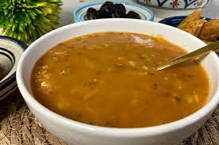

Harira

Description :
Harira is a traditional Moroccan soup of tomato, lentils, and chickpeas. Wonderfully fragrant with zesty seasoning,
it often ranks high on lists of must-try Moroccan foods. It’s a popular offering in Moroccan homes and
restaurants, and you can even find it sold as street food.
Ingredients
- 8 oz. lamb, beef or chicken, diced
- 3 tbsp vegetable or olive oil
- several soup bones (optional)
- 2 lbs soft, ripe tomatoes - (about 6 large)
- 1 handful dry chickpeas, soaked and peeled
- 2 handfuls dry green or brown lentils
- 1 large onion, grated
- 1 stalk celery (with leaves), chopped
- 1 small bunch flat leaf parsley, finely chopped
- 1 small bunch cilantro, finely chopped
- 1 tbsp smen (optional)
- 1 tbsp salt
- 1 tbsp ginger
- 1.5 tsp black pepper
- 1 tsp ground cinnamon - optional; see notes
- 1/2 tsp turmeric
- 3 tbsp tomato paste - combined with 1 or 2 cups water
- 3 tbsp uncooked rice OR broken vermicelli
- 1 cup flour - combined with 2 cups water
- lemon wedges and cilantro (optional) - for garnish
Steps :